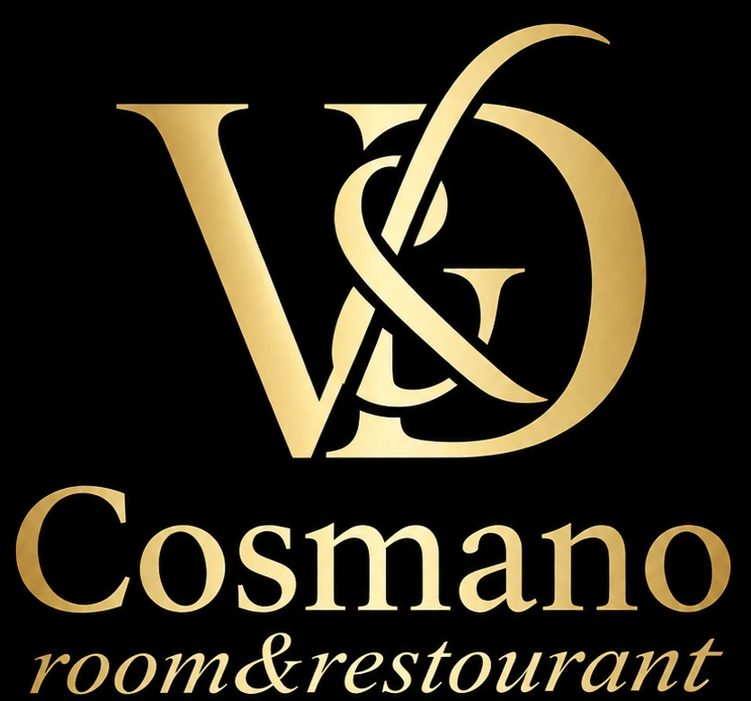
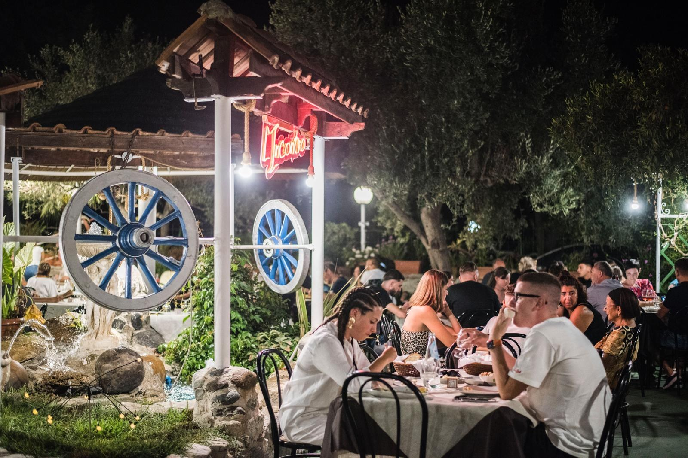

Ristorante L’Incontro
Prenotazioni telefoniche
338 119 9236
BENVENUTI DA V&D COSMANO
Il piacere di una buona tavola e l'accoglienza di un soggiorno sulla costa calabrese. Scopri le nostre due realtà e scegli come vivere la tua esperienza a Brancaleone.
RISTORANTE · DAL 1989
Una storia di cucina e convivialità, immersa nell'atmosfera del nostro giardino. Un luogo in cui ritrovarsi, gustare e condividere momenti speciali.
Per prenotare un tavolo, chiamaci direttamente.
☎ Chiama il 338 119 9236Casa Cosmano
Scopri le camere e verifica la disponibilità sul sito dedicato.ROOM · OSPITALITÀ
Le nostre camere e i nostri alloggi per un soggiorno a Brancaleone. Informazioni, disponibilità e prenotazioni sono gestite direttamente sul sito di Casa Cosmano.
Scopri le camere ↗LA NOSTRA STORIA
Dal 1989, con il ristorante L’Incontro, il piacere di accogliere è parte della nostra storia. Oggi V&D Cosmano riunisce l'esperienza del ristorante e l'ospitalità di Casa Cosmano sotto un'unica identità.
I NOSTRI LUOGHI

Il calore dell'accoglienza,
la bellezza dei momenti condivisi.
La galleria potrà essere arricchita con altre fotografie reali delle camere, del ristorante e degli spazi esterni.
CONTATTI & PRENOTAZIONI
Prenotazioni telefoniche
338 119 9236Disponibilità e prenotazione camere
casacosmano.it ↗